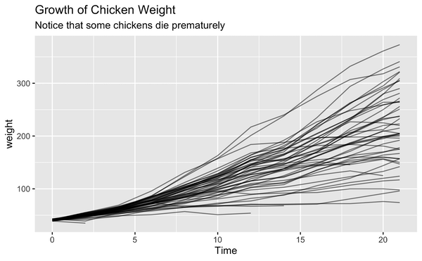

May 26th, 2022
"Must Have Skills[tm]" is plain silly.
Let's say that you're fresh out of college and keen on getting into the data science field. The internet has told you that data science is the sexiest profession of the century so you can’t wait to get started! Unfortunately, it's likely that you've got the impression that you need skills that they didn't teach in college. In college the focus was on maths and proofs, which might not be what industry is after. So you go online and search for relevant skills. Odds are that when you do that, you'll find this:
It’s a screenshot from the landing page of DataCamp. It tells you that you can build skills online, that data really drives everything and that you can use the platform to get the skills you need for the future of work. It doesn’t mention the other thing they’re known for.
If you’re starting out and you feel like you might have skills missing I can certainly imagine that this website is going to make you feel even more insecure. I have issues with the messaging on display here. It’s not just that it’s a marketing tactic based on fear, it’s also that what they claim is plain silly. And in this document, I’d like to explain why.
Demonstration of a Use Case.
Let’s say that you’re working on an A/B test for the chicken industry. Different chickens have been given different diets and it’s your job to make sure that we pick the best option. You can see a chart of the dataset below.
Each dot in the chart represents the weight that a chicken had at a timestep. The lines indicate the average weight of the chickens per diet per timestep. You can see that as time moves forward the weight of the chickens’ increases but that the variance increases too. You can also see that diet number 3 seems to result in the chickens with the most weight.
In the chart, we’re only showing the averages of the diets over time. But what if we were interested in predicting the weights of a chicken?
We could replace the weight averages with a model output! We could apply scikit-learn, keras, pytorch, tensorflow, or any other tool that’s part of the future of work[™]. If we do this right then we might even be able to accurately predict how much more a chicken would weigh if it was growing for longer. There’s even a plausible business case for this!
Tools get in the way.
Hopefully, that last paragraph made you cringe a little. If you want to predict a line going forward, you don’t need a fancy machine learning model. You just need to project the line going forward with the same speed that it’s growing now. You could, if you wanted to, even do this with a pencil.
This represents the first main issue I have with claims of “must-have skills”. You can learn all about the syntax of a tool, but this doesn’t mean you’ll learn when to use it. Or more importantly; when not to use it.
There’s an analogy that could be made here with a kitchen. I could claim that if you’re a cook, the ability to use an oven is a “must-have” skill. But knowing how to use an oven and being a great cook are two different things. It’s great if you’ve learned to properly use an oven while baking a loaf of bread, but I pray that you’re able to find another tool in the kitchen when you’re making spaghetti.
When Distraction is Dangerous
You could even say that tools are able to “distract” you from what you’re actually supposed to do. Contrary to popular belief, data science isn’t about algorithms. It’s about understanding data.
With that in mind, let’s have another look at our data. This time with a slightly different visualization.

Every line in this chart represents a chickens’ growth path. If you take the time to look at the chart, you might notice that something is … off. It seems like not every chicken makes it to 21 timesteps.
To help us investigate this, let’s give the chickens in question a separate color. That makes it easier to distinguish.
You can see that there are five chickens that died prematurely.
Let’s think about this one for a moment. If you’re savvy with visualisation tools and if you know how to ask the right questions you would’ve been able to spot this. But would scikit-learn have detected this? What about tensorflow?
Unless we tell the machine learning model what to look for, it has no way of learning. The machine learning model would be able to see a relationship between weight, time and diet. But it wouldn’t be able to interpret what it means when there are rows missing. That means that a machine learning model might favor a diet that causes a great average weight-gain, but potentially … also causes premature deaths.
Let’s be honest about skills.
When you consider this example one can really start to wonder; what skills do we need from our data scientists? Is it really spark, tensorflow or scikit-learn? Or are we looking for skills that are a little more … human?
It’s easy to have a model optimize numerically, but we need a human in the loop to make sure that it doesn’t cause any artificial stupidity. We need folks who can understand the problem well enough to apply domain knowledge, common sense, and critical thinking. There are still tools involved that would make your work easier. But we should observe that these tools are just tools. They are by no means “Must-Have”.
Alternatives
It’s certainly true that new tools will appear and old tools will become less fashionable. If you’re interested in a career in data science then you can expect that there will be new tools you can learn in your career. But the basic skills don’t change too much. Companies still need people who can quickly understand a dataset in such a way that we can build meaningful apps on top of it.
So don’t worry about learning the state-of-the-art tools. Don’t give in to the hype. Instead, just make sure that you master the basics. It should be your job to solve problems with data, not to brag about how shiny your tools are.
My advice is to try to look for tools and practices that make your day-to-day professional life more enjoyable. As luck would have it, there’s plenty of online resources that offer high-quality content for just this!
- There's calmcode, the site that you're on now.
- There’s freecodecamp. They have an online learning environment as well as a huge collection of content on their youtube channel.
- There's PyData! It's a global series of conferences with recorded talks hosted on YouTube. If you’re keen on learning data skills then my personal recommendation is to check out the PyData playlists. You can learn all sorts of practical tips from pandas in jupyter, docker, time series or lessons learned from failures.
There's even some paid services that we might recommend.
- The Python morsels project seems to have a nice milimalist approach to learning Python.
- The testdriven.io project offers deep dive tutorials and they also support open-source by donating a portion of their revenue.
Conclusion
My hope is that we’re able to get a more diverse crowd into data science so that we may prevent “dead chickens”. There’s a human touch needed and the profession would become a whole lot better if more perspectives are able to join in.
So let’s stop the “Must-Have” skill anxiety nonsense and instead try to approach learning more calmly.
Back to blog.